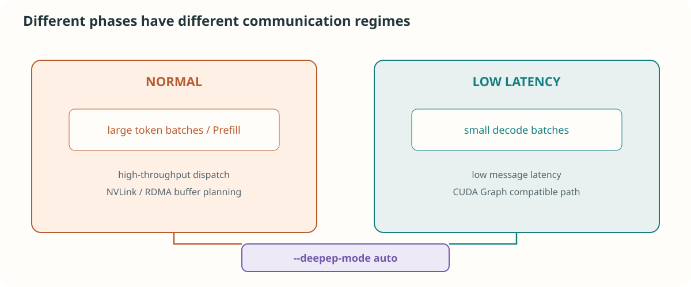
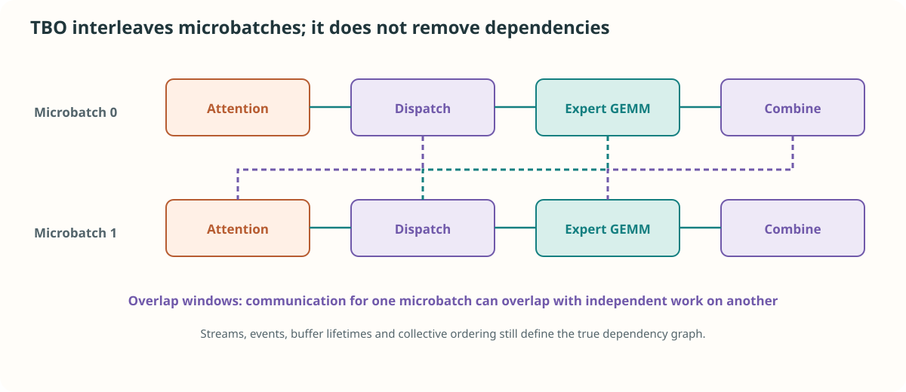

第 19 章 · DeepEP V2 与 EPLB
DeepEP V2：Dispatch Modes、ElasticBuffer、Overlap 与 EPLB
从 MoE token shuffle 深入 Normal/Low-Latency、V1/V2 buffer、FP8 dispatch、TBO/SBO 与 expert load balancing。
从 MoE token shuffle 深入 Normal/Low-Latency、V1/V2 buffer、FP8 dispatch、TBO/SBO 与 expert load balancing。 本章以 SGLang 固定 commit 为实现证据，把论文背景、当前运行时、教学模型和部署限制分开说明。
读完本章，你应该能
- 沿着真实控制流解释输入、状态、调度决策和输出。
- 识别资源限制、缓存命中与网络传输之间的权衡。
- 用 CPU toy 实验验证边界，而不把 toy 当成 GPU benchmark。
1. 为什么 MoE 的瓶颈不只在 Expert GEMM？
MoE layer 先由 Router 为每个 token 选择 Top-K experts，再把 token activations 分发到对应 expert owners，执行 grouped GEMM，最后把 expert outputs combine 回原 token 顺序。若 expert 被分布在多个 GPU，token shuffle 的 all-to-all 通信会成为关键成本。
因此要同时看通信 backend、MoE runner、quantization、EP/TP group 和 batch phase。把“DeepEP”当作一个独立 GEMM kernel，或者把 all-to-all backend 与 runner backend 混为一个选项，都会误读实际执行路径。
2. Normal 与 Low-Latency：面向不同的 batch regime

SGLang 文档把 DeepEP / Mooncake dispatch 分成 normal 与 low_latency：前者偏向 Prefill 的高吞吐；后者偏向 Decode 的低延迟与 CUDA Graph 兼容。文档建议 --deepep-mode auto 允许运行时切换，显式固定模式更适合调试或开发。
“Normal 一定快 Prefill、Low-latency 一定快 Decode”仍过于绝对：消息大小、expert 数、EP group、硬件拓扑、batch size 和量化布局都会改变 crossover point。
3. Dispatcher 与 Runner 是两条独立选择轴
SGLang EP forward 由 TopK Router 产出 expert IDs / weights；Dispatcher 执行 dispatch / combine；MoeRunner 负责 expert computation。未融合路径可分为 dispatch → pre-permute → core runner → post-permute → combine；某些 backend pair 可注册 fused function，替换中间步骤。
--moe-a2a-backend 选择通信/dispatch 实现；--moe-runner-backend 选择 grouped GEMM / expert compute。兼容性并非任意笛卡尔积：当前文档列出的 DeepEP、Mooncake、NIXL-EP、PPLX 等 backend 对 EP size / TP size、设备与 attention-DP 有具体限制。
4. DeepEP V1 Buffer 与 V2 ElasticBuffer 不能混成一个 API
SGLang 的经典 DeepEP dispatcher 路径使用 deep_ep.Buffer，按 normal / low-latency mode 建立 NVLink/RDMA buffer hints，并维护 dispatch mode。新的 DeepEP V2 integration 在 SGLang 中通过 ElasticBuffer 组织 buffer lifecycle，并缓存 buffer key（group、hidden size、top-k、per-rank capacity、FP8 flag、world size 等）。
当前 SGLang snapshot 的 V2 adapter 仍通过 ElasticBuffer facade 统一使用 dispatch/combine handle；DeepEP 上游后来又把 ElasticBuffer 的生命周期抽象拆分为 EPBuffer、EngramBuffer、PPBuffer、BucketBuffer 等组件。要按具体 SGLang/DeepEP wheel 版本检查 API，不能把 upstream main 的 API 名称直接写成 SGLang 当前使用的调用。
5. Buffer 容量：per-rank token 上限是正确性约束
DeepEP V2 的 num_max_dispatch_tokens_per_rank 是 dispatch buffer 的 capacity 约束。输入 token 数超出上限、hidden size 不匹配、hidden size 不满足 activation scale block alignment、Top-K 宽度不一致时，SGLang adapter 会拒绝 dispatch。它不是一个只影响性能的“建议 batch size”。
FP8 dispatch 需要额外的量化与 scale layout。SGLang 会按 decode / prefill expand path 选择相应布局；在不同 scale format、TMA alignment、attention-DP/CP topology 下，路径可能不同。不要把 FP8 payload bytes 直接等同于原始 BF16 bytes 的固定一半而忽略 scales、alignment 与 padding。
6. 一次 token shuffle 如何往返？
令 token i 的 Top-K route 为 expert 集合 E(i)，每个 route 还有 gate weight。Dispatch 按 expert owner 分组并发送 activation；本地 expert GEMM 对分配到本 rank 的 token rows 计算；Combine 按原 token / route 索引把输出还原并按 gate weights 聚合。
正确性不变量包括：每个 token 的 route identity 保留；dispatch / combine handle 必须配对；每个 rank 的 collective 顺序一致；capacity 与 padding 不丢真实 token；空 rank 也要参与协议定义的同步路径。SGLang V2 adapter 会阻止前一次 dispatch handle 未被 combine 消费时再启动下一次 dispatch。
7. TBO 与 SBO：隐藏通信延迟，但不消灭依赖

TBO 通过 micro-batch interleaving，让一个 microbatch 的 attention 与另一个 microbatch 的 dispatch/combine 形成 overlap；SBO 使用 dispatcher hooks 在单个 batch 的阶段内组织 overlap。两者都需要保持数据依赖、stream/event 顺序与 buffer lifetime。
这里的 overlap 必须由 trace 测量，范围不超过两项中较短者；这不是“通信成本免费”。TBO 的最高加速数字是特定实验的上界/结果，不能当作所有部署的保证。
8. EPLB：把热专家重新放置或复制
Router 产生的 expert token count 可能高度偏斜：某些 expert 收到远多于平均值的 token，导致拥有它们的 GPU 成为长尾。EPLB 根据 expert activation statistics 计算更均衡的 expert placement，并可通过 expert replication 减少热点。
但 load balance 的目标要区分：按 token count 均衡不一定等于按 GEMM FLOPs、memory footprint 或 end-to-end layer latency 均衡。统计窗口太短会追噪声，太长又反应迟缓；rebalancing 还会产生 expert weight movement 与 cache invalidation 成本。
可用 max/mean 或 max/median 描述偏斜，但这些是诊断指标，不等于实际 GPU utilization 或 throughput。
9. 兼容性矩阵与调优顺序
- 当前 SGLang 文档列出的 DeepEP / Mooncake / NIXL-EP / PPLX / MORI 对 EP size 与 TP size 有约束；混合 EP/TP 并非所有 A2A backend 都支持。
- DeepEP V2.5 / sgl-deep-ep-v25 的上游要求随 release 改变；该 package line 文档列出 Hopper+、CUDA Toolkit 13.1+、PyTorch 2.10+、NCCL 2.32.3+、NVLink 与 RDMA。SGLang 使用的 sgl-deep-ep / ElasticBuffer branch 则有不同的 CUDA/NCCL 构建基线，不能混用两组 requirements。
- DeepEP dispatch/combine 仍需要 GPU SM；不能假设 RDMA-only、zero-SM EP 可用。
- 先验证正确性与容量，再测 normal/low-latency mode，再调 buffer / FP8 layout，最后评估 TBO/SBO/EPLB。
先跑小规模准确性测试，再做 profile。任何 benchmark 都需报告硬件、GPU interconnect、EP/TP/DP topology、model、quantization、batch/prompt/output、warmup 和统计区间。
10. 交互：Prefill、Decode 与自动模式
DeepEP dispatch mode
Normal：更偏大 token batch / Prefill 高吞吐；关注 NVLink 与 RDMA buffer、queue depth 和总传输字节。
Low latency：更偏 Decode 小 batch、masked dispatch 和 CUDA Graph；关注 per-rank capacity、expert count、同步路径与小消息时延。
Auto：允许运行时按 forward mode 选择；仍应在目标模型、设备与拓扑上验证切换边界。
运行 deepep_overlap.py，模拟 compute/communication overlap 与 expert load skew，不模拟真实 NCCL/RDMA kernel。
11. 源码阅读路线与版本边界
- SGLang Expert Parallelism docs：backend、mode、TBO/SBO、EPLB。
- deepep.py：V1 buffer 与 normal/low latency mode。
- deepep_v2.py：ElasticBuffer key、capacity validation、dispatch handle。
- DeepEP upstream snapshot f6aa38fe06cd。
- SGLang Large-Scale EP engineering blog。
SGLang snapshot：ac0243723b0dcba177f8792979daaa2f8d6ee6ea；DeepEP snapshot：f6aa38fe06cd4a0489e7730365d4e0114970a2f3。SGLang 的 V2 adapter API 与 DeepEP 上游最新 API 需分别核对。